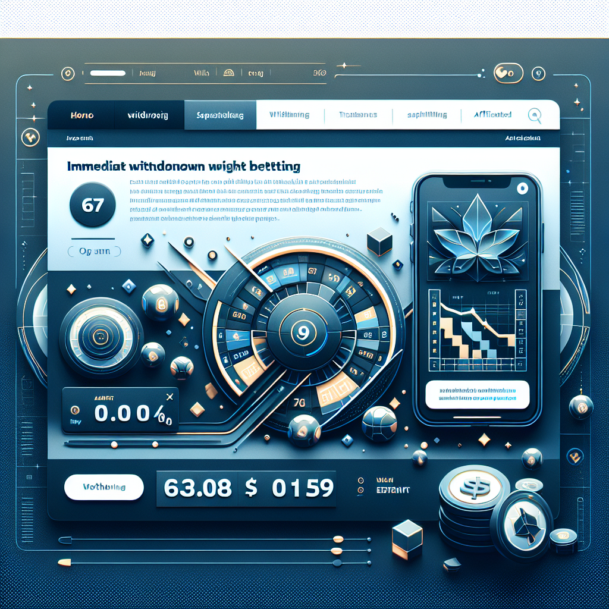
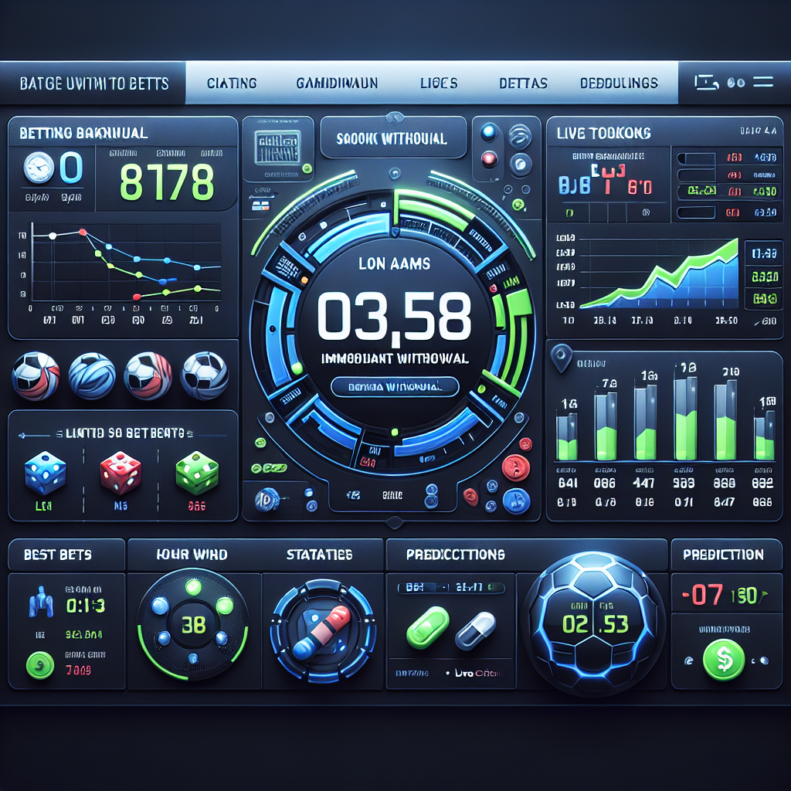

Cosa sono i siti non AAMS con prelievo immediato
I casino non aams con prelievo immediato sono piattaforme di gioco online internazionali che operano con licenze rilasciate da autorità estere, come Curacao, Malta o altre giurisdizioni riconosciute. A differenza dei siti regolamentati dall'Agenzia delle Dogane e dei Monopoli (ADM, ex AAMS), questi casino stranieri accettano giocatori italiani senza sottostare alle restrizioni burocratiche imposte dalla normativa nazionale.

Il principale vantaggio di questi siti casino non aams è la velocità dei pagamenti. Mentre i casino con licenza italiana richiedono spesso dai 3 ai 7 giorni lavorativi per elaborare un prelievo, le piattaforme internazionali processano le richieste in tempi drasticamente ridotti. Quando parliamo di "prelievo immediato", ci riferiamo a transazioni completate tra pochi minuti e un paio d'ore, una differenza che fa la differenza per chi vuole avere accesso rapido alle proprie vincite.
Questi siti offrono inoltre maggiore flessibilità nei limiti di deposito e prelievo, una selezione più ampia di metodi di pagamento (incluse criptovalute) e bonus generalmente più vantaggiosi. La sicurezza rimane una priorità: è fondamentale scegliere solo casino con licenze legittime e reputazione consolidata nella comunità dei giocatori internazionali.
Come scegliamo i migliori casinò che pagano subito
Non tutti i siti con prelievo immediato mantengono le promesse pubblicitarie. Per identificare le piattaforme veramente affidabili, applichiamo criteri di valutazione rigorosi che mettono alla prova ogni aspetto operativo del servizio offerto.
Velocità effettiva dei pagamenti
Il primo parametro verificato è la velocità reale di elaborazione. Testiamo personalmente i tempi di attesa tra la richiesta di prelievo e l'accredito sul conto, distinguendo tra i tempi dichiarati dal casino e quelli effettivamente riscontrati. Un casino che promette prelievi istantanei ma impiega 24 ore non risponde ai criteri di eccellenza.
Licenze e conformità legale
Le licenze internazionali rappresentano la garanzia di legittimità. Le autorità di Curacao, Malta (MGA) e Kahnawake sono tra le più riconosciute nel settore. Questi enti regolatori impongono standard di sicurezza, equità dei giochi e protezione dei fondi dei giocatori. Un casino privo di licenza verificabile è da evitare categoricamente.
Reputazione nella comunità
Le recensioni giocatori sui forum specializzati e sui portali indipendenti offrono una prospettiva realistica sull'affidabilità del casino. Monitoriamo segnalazioni di ritardi nei pagamenti, mancate risposte del supporto o clausole contrattuali poco trasparenti. Un casino con numerosi reclami non risolti viene automaticamente escluso dalle nostre raccomandazioni.
Assistenza clienti reattiva
L'assistenza clienti disponibile 24 ore su 24 in italiano o almeno in inglese è essenziale. In caso di problemi con un prelievo bloccato, la possibilità di contattare immediatamente un operatore via chat live può fare la differenza tra una risoluzione rapida e giorni di attesa frustrante.

Metodi di pagamento per prelievi istantanei
La scelta del metodo di pagamento influisce direttamente sulla velocità del prelievo. Mentre i bonifici bancari tradizionali richiedono diversi giorni lavorativi, esistono alternative digitali che permettono trasferimenti quasi istantanei nei casino senza aams.
Criptovalute: Bitcoin e USDT
Le criptovalute rappresentano l'eccellenza assoluta per chi cerca velocità e privacy. Bitcoin, Ethereum, Litecoin e stablecoin come USDT (Tether) permettono transazioni elaborate direttamente sulla blockchain, senza intermediari bancari che rallentino il processo.
I vantaggi delle crypto nei prelievi sono molteplici:
- Velocità: La maggior parte dei casino processa prelievi crypto in 10-30 minuti
- Anonimato: Non è necessario condividere dati bancari sensibili
- Limiti elevati: Nessuna restrizione imposta da banche tradizionali
- Commissioni ridotte: Le fee di rete sono generalmente inferiori rispetto ai circuiti tradizionali
Molti casino che pagano subito elaborano automaticamente le richieste in criptovaluta senza necessità di verifica manuale da parte del team finanziario. Questo significa che una volta approvata la richiesta, il trasferimento parte immediatamente verso il wallet del giocatore.
Portafogli elettronici (E-Wallets)
I portafogli elettronici come Skrill, Neteller, MiFinity e Jeton offrono un eccellente compromesso tra velocità e familiarità per chi preferisce non utilizzare criptovalute. Questi servizi funzionano da intermediari digitali che mantengono i fondi in un ambiente protetto, permettendo trasferimenti rapidi verso e dai casino online.
Tempi medi di elaborazione per e-wallet:
- Skrill: 1-6 ore nella maggior parte dei casi
- Neteller: 1-8 ore, dipende dalla verifica del conto
- MiFinity: Spesso istantaneo, massimo 2 ore
- Jeton: 30 minuti - 4 ore
Gli e-wallet richiedono una registrazione iniziale e in alcuni casi una verifica dell'identità, ma una volta configurati diventano strumenti estremamente efficienti. Un ulteriore vantaggio è la possibilità di gestire fondi da diversi casino in un'unica interfaccia centralizzata.
Carte prepagate e metodi tradizionali
Le carte Visa e Mastercard, sia di credito che di debito, sono accettate dalla maggior parte dei casino internazionali. Tuttavia, presentano limiti significativi per i prelievi. Molte banche italiane bloccano transazioni verso siti di gambling non ADM, e anche quando funzionano i tempi possono variare da 1 a 5 giorni lavorativi.
I bonifici bancari (SEPA o internazionali) sono generalmente l'opzione più lenta, con tempistiche che vanno dai 3 ai 7 giorni lavorativi. Sono consigliati solo per importi molto elevati quando gli altri metodi presentano limiti insufficienti.
Come prelevare le vincite velocemente: Guida passo passo
Ottenere un prelievo veramente immediato richiede preparazione e attenzione ad alcuni aspetti tecnici che spesso vengono trascurati dai giocatori.
Passo 1: Completa la verifica dell'identità (KYC)
La verifica dell'identità è probabilmente l'ostacolo più comune che rallenta i prelievi. Anche i casinò non aams che pagano subito sono tenuti per legge internazionale a verificare l'identità dei giocatori prima di processare prelievi significativi. Questo processo, chiamato KYC (Know Your Customer), richiede l'invio di documenti come:
- Carta d'identità o passaporto valido
- Prova di residenza recente (bolletta, estratto conto)
- Foto della carta di pagamento utilizzata (fronte, con numeri centrali oscurati)
- Eventuale selfie con documento in mano
Il consiglio fondamentale è completare questa verifica immediatamente dopo la registrazione, senza aspettare la prima vincita. In questo modo, quando vorrete prelevare, il conto sarà già validato e non ci saranno ritardi burocratici.
Passo 2: Verifica i requisiti di scommessa attivi
Se avete attivato un bonus di benvenuto o qualsiasi altra promozione, verificate che i requisiti di scommessa (wagering requirements) siano stati completati. Nessun casino, per quanto veloce, vi permetterà di prelevare fondi bonus non ancora giocati secondo i termini e condizioni.
I requisiti tipici variano da x30 a x50 volte l'importo del bonus. Ad esempio, un bonus di 100€ con requisito x40 richiede di scommettere 4.000€ prima di poter prelevare le vincite generate con quel bonus.
Passo 3: Utilizza lo stesso metodo del deposito
Per ragioni di sicurezza e prevenzione del riciclaggio di denaro, i casino richiedono che il primo prelievo avvenga sullo stesso metodo utilizzato per il deposito. Se avete depositato con Skrill, il prelievo dovrà tornare su Skrill. Solo dopo aver prelevato almeno l'importo depositato potrete scegliere metodi alternativi.
Questa regola può rallentare i tempi se avete depositato con un metodo lento. Per questo motivo, se la priorità è la velocità, conviene depositare fin dall'inizio con crypto o e-wallet.
Passo 4: Richiedi il prelievo negli orari di punta
Anche i casino con elaborazione rapida hanno team finanziari che lavorano in orari specifici. Richiedere un prelievo durante la notte europea potrebbe significare attendere fino al mattino per l'approvazione manuale. Gli orari più efficienti sono generalmente tra le 10:00 e le 18:00 (fuso orario europeo).
Passo 5: Contatta il supporto in caso di ritardi
Se dopo 2-3 ore il prelievo è ancora in stato "pending" (in attesa), non esitate a contattare l'assistenza clienti via chat live. Spesso un semplice sollecito può accelerare la verifica manuale da parte del team finanziario.
Bonus e promozioni nei casino senza licenza AAMS
I casino internazionali sono famosi per offrire bonus di benvenuto estremamente generosi, spesso superiori al 200% del primo deposito, accompagnati da centinaia di giri gratis. Tuttavia, è fondamentale comprendere come questi bonus influenzano la possibilità di effettuare prelievi immediati.
Tipologie di bonus comuni
Le promozioni più frequenti nei siti non ADM includono:
- Bonus di benvenuto match: Il casino raddoppia o triplica il primo deposito (es. depositi 100€, ricevi 200€ di bonus)
- Giri gratis senza deposito: Free spin offerti alla registrazione, senza necessità di depositare
- Cashback settimanale: Rimborso di una percentuale delle perdite nette della settimana
- Reload bonus: Bonus sui depositi successivi al primo
- Bonus VIP: Premi personalizzati per giocatori ad alto volume
L'impatto dei bonus sui prelievi veloci
Il principale ostacolo ai prelievi immediati quando si utilizzano bonus sono i requisiti di scommessa. Fino al completamento del wagering, i fondi rimangono "bloccati" e non possono essere prelevati. Per chi cerca la massima velocità, esistono due strategie:
Strategia 1: Rifiutare i bonus al momento del deposito. Molti casino permettono di disattivare automaticamente le promozioni, consentendo di giocare solo con denaro reale prelevabile in qualsiasi momento.
Strategia 2: Scegliere bonus con requisiti di scommessa bassi (x20 o inferiori) e contribuzione delle slot al 100%. Questo permette di completare rapidamente i requisiti e sbloccare le vincite.
Cashback: l'alternativa senza vincoli
Il cashback settimanale rappresenta il tipo di bonus più favorevole per chi privilegia prelievi rapidi. Funziona come rimborso sulle perdite (tipicamente 5-20%), viene accreditato senza requisiti di scommessa o con wagering molto bassi (x1-x3), e può essere prelevato quasi immediatamente.
Vantaggi e svantaggi dei siti con prelievo immediato
Come ogni scelta nel mondo del gambling online, anche i casino internazionali presentano aspetti positivi e negativi che è importante valutare con equilibrio.
Vantaggi principali
| Aspetto | Vantaggio |
|---|---|
| Velocità dei pagamenti | Prelievi processati in minuti o poche ore invece di giorni |
| Limiti più alti | Nessun limite mensile imposto dalla legge italiana, libertà di movimento |
| Privacy | Nessuna comunicazione automatica all'Agenzia delle Entrate |
| Varietà di giochi | Accesso a migliaia di slot e provider non disponibili sui siti ADM |
| Bonus generosi | Promozioni significativamente più ricche rispetto ai casino italiani |
| Metodi di pagamento | Supporto completo per criptovalute e e-wallet internazionali |
Svantaggi da considerare
| Aspetto | Svantaggio |
|---|---|
| Assenza di tutela ADM | In caso di controversie, non si può ricorrere all'autorità italiana |
| Responsabilità fiscale | Il giocatore deve autodichiarare le vincite sopra i 500€ |
| Conversione valuta | Possibili commissioni di cambio se il casino opera in EUR ma con sede extra-UE |
| Autoesclusione limitata | I sistemi di gioco responsabile non sono coordinati a livello nazionale |
| Barriera linguistica | Non tutti i siti offrono supporto in italiano |
Considerazioni sul gioco responsabile
L'assenza di restrizioni rigide può rappresentare un'arma a doppio taglio per giocatori con tendenze problematiche. I casino ADM implementano limiti di deposito obbligatori e sistemi di autoesclusione nazionali. Nei siti internazionali, questi strumenti esistono ma richiedono maggiore autodisciplina da parte del giocatore.
È fondamentale stabilire autonomamente limiti di spesa, fare pause regolari e considerare il gambling come intrattenimento, non come fonte di reddito. Molti casino non AAMS offrono comunque strumenti di gioco responsabile come limiti di deposito volontari, timeout temporanei e autoesclusione permanente.
Confronto: Casino ADM vs Casino Non AAMS
Per comprendere meglio le differenze operative, questa tabella mette a confronto le caratteristiche principali delle due categorie di piattaforme.
| Caratteristica | Casino ADM (AAMS) | Casino Non AAMS |
|---|---|---|
| Tempo medio prelievo | 3-7 giorni lavorativi | 10 minuti - 24 ore |
| Limiti di deposito | Obbligatori per legge | Opzionali, configurabili dal giocatore |
| Tassazione vincite | Trattenuta automaticamente dal casino (25% sulle vincite superiori a 500€) | A carico del giocatore (autodichiarazione) |
| Metodi di pagamento | Limitati (carta, bonifico, alcuni e-wallet) | Ampia scelta incluse criptovalute |
| Bonus di benvenuto medio | 50-100% fino a 500€ | 100-300% fino a 2.000€ o più |
| Numero di slot disponibili | 1.000-3.000 titoli | 5.000-10.000 titoli |
| Tutela legale | Piena protezione ADM | Dipende dalla licenza internazionale |
| Registrazione SPID | Obbligatoria dal 2022 | Non richiesta |
Sicurezza e legalità: cosa dice la legge italiana
Una domanda ricorrente riguarda la legalità di giocare su piattaforme internazionali. La normativa italiana vieta la promozione e l'offerta di gioco d'azzardo senza licenza ADM sul territorio nazionale, ma non punisce il singolo giocatore che accede a siti esteri.
In pratica, nessun giocatore italiano è mai stato sanzionato per aver utilizzato un casino con licenza Curacao o MGA. La responsabilità legale ricade sugli operatori che offrono attivamente il servizio senza autorizzazione, non sugli utenti.
Tuttavia, esistono obblighi fiscali: le vincite superiori a 500€ devono essere dichiarate nella dichiarazione dei redditi come "redditi diversi". L'aliquota applicabile varia in base al totale dei redditi, ma si aggira tipicamente intorno al 23-43%. Nei casino ADM questa tassazione è già trattenuta alla fonte, mentre nei siti internazionali è responsabilità del giocatore.